Every picture and sound this mod ships, what each one is for, and where it came from.
The assets
Everything listed here is original to this project. Nothing is copied from another mod, and nothing is extracted from the game.
Where Rimrooms uses one of the game's own pictures or sounds, it names the path and the game provides it while you play — that file is not in this package and is not on this page.
52 drawings and 17 sound cues — 69 entries from 99 files, 24652 KB in total.
This page is generated from the package itself on every build, so it cannot drift from what actually ships.
How to read this page
Search the table and sort it by any column. Click a heading to sort, click it again to reverse. The search box filters every column at once, so typing gate finds the frames, the animation and the cues together.
A building that can be rotated needs a separate drawing per direction. The game mirrors west from east for free; nothing else is free. A rotatable set is one row with one picture, because three facings are one drawing and not three assets.
one frame identifies a fixed pose or interface icon. The closed journal and Set Gate button need one picture; the journal's reading poses and directional equipment have their own facing sets. Rectangular sets list both pixel sizes because turning them swaps their width and depth.
A sound cue has no picture, so its preview is a dash. It is in the same table rather than a separate one, because a reader asking what this mod ships wants one list.
The pictures are checkerboarded behind on the published site. Most of these textures are mostly transparent — a gate frame is an outline around a hole — so the squares are there to show you where the transparency is instead of hiding it against a flat colour.
What it is describes the drawing. How you use it is what a player does with the thing, which is a different question and used to be missing. In game names the definition or the code that loads the file, so an asset nothing refers to shows up as a fault rather than hiding.
What is in here
| Kind | How many | What it is |
|---|---|---|
| Menu background | 12 | A painting behind the main menu. Twelve, shown in turn. |
| Building | 6 | Something the company builds and you can place and rotate. |
| Gate frame | 4 | The machine trim a designated door wears, one per supported footprint. |
| Animation frame | 22 | One still of a sequence the code plays in order. |
| Item | 6 | Something a colonist carries, hauls or reads. |
| Floor | 1 | A terrain surface. |
| Interface icon | 1 | A picture used by a button or panel rather than placed in the world. |
| Sound cue | 17 | A company sound. Mono, 48 kHz, played at the thing that made it. |
The gallery
| Preview | Asset | Kind | What it is | How you use it | In game | Size | Facings | Master |
|---|---|---|---|---|---|---|---|---|
| — | RR_AnalysisComplete | Sound cue | A restrained verification click and short instrument confirmation. | Plays when a researcher finishes analysing a finding at a bound laboratory — the point the insight is actually yours to spend. | RR_AnalysisComplete | 1.0 s, 48 kHz mono | — | RR_AnalysisComplete.wav |
| RR_CompanyJournal_Closed | Item | The journal as it sits on a shelf or in a pack: a dark bound cover with a gold band and a page marker. | What you see on a shelf, in a pack, or being hauled. Right-click the book with a colonist to send it through a gate; right-click and pick What is this journal for? for the four steps in the game. | company field journal | 128 x 128 | one frame | RR_CompanyJournal_Closed.png | |
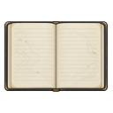 | RR_CompanyJournal_Open | Item | The journal open, ruled pages facing up. This is what is drawn while a colonist is actually reading it. | Drawn while a colonist is actually reading the journal, so you can tell at a glance that somebody is working on a record rather than carrying it. | company field journal | 128 x 128 | east, north, south | RR_CompanyJournal_Open_south.png |
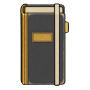 | RR_CompanyJournal_Vertical | Item | The journal stood upright, as it appears on a shelf. Seen from the east it is the spine alone, which is correct. | Drawn when the journal is stood upright on a shelf — including the archive shelf you designated, which is where a filled book has to end up before a researcher can analyse it. | company field journal | 128 x 128 | east, north, south | RR_CompanyJournal_Vertical_south.png |
| — | RR_ContractPaid | Sound cue | A short receipt-feed mechanism and stamped latch, without a jackpot melody. | Plays when the company pays out on a completed request, alongside the letter. A receipt rather than a jackpot. | RR_ContractPaid | 1.0 s, 48 kHz mono | — | RR_ContractPaid.wav |
| — | RR_CutoffThrown | Sound cue | A heavy switch clack and circuit latch. | Plays instead of the emergency cue when the cause was somebody's decision — the emergency cutoff or the kill switch. A mechanical clack rather than a failing motor. | RR_CutoffThrown | 0.5 s, 48 kHz mono | — | RR_CutoffThrown.wav |
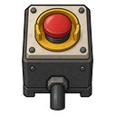 | RR_EmergencyCutoff | Building | A sealed box with a palm-sized red stop button and a stub of conduit. Reads the same from every side, which is why one drawing honestly produces all four facings. | Build it on the conduit run into a gate's equipment, under Power. Flicking it opens the circuit and ends an open connection, which starts the crew's return window — and flicking it is ordinary colonist work, so somebody at home can cut a connection while a crew is still on the far side. | emergency cutoff | 128 x 128 | east, north, south | RR_EmergencyCutoff.png |
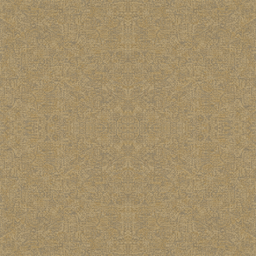 | RR_FadedInstitutionalCarpet | Floor | Straw-coloured wall-to-wall weave, worn and dense. Made seamless by mirroring, so no joint appears at a cell boundary. | Lay it under Floors, needs Carpet making. Same cloth cost, same research and the same cleaning penalty as any other carpet — what is ours is the surface, which is the one the places out there are floored with. | faded institutional carpet | 256 x 256 | — | RR_FadedInstitutionalCarpet.png |
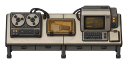 | RR_FieldAnalysisBench | Building | A long analysis counter — reel recorder, reader and terminal across one worktop. Three facings, with the end-on view drawn for the rotated footprint. | Build under Production, needs Machining. Bind it to a gate on the Machine pane as the assembly bench and run the assemble-gate-section bill on it; it also makes company field journals. An ordinary machining table does the same jobs. Turning it swaps a two-cell counter for a one-wide, two-deep one, so leave room at the operating side. | field analysis bench | 128 x 256 / 256 x 128 | east, north, south | RR_FieldAnalysisBench.png |
| — | RR_FieldRadio | Sound cue | A crew member calling in an observation from the field. | Plays when a crew member calls in an observation from the field. Silenced by Mute field and radio cues. | RR_FieldRadio | 0.6 s, 48 kHz mono | — | RR_FieldRadio.wav |
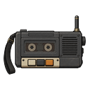 | RR_FieldRecorder | Item | A reel-to-reel recorder with a shoulder strap and a short-range set. Stands beside a bench rather than being carried now. | Build under Production, needs Microelectronics basics. Stand it beside a field analysis bench and that bench works faster. One per bench. One cell, and it can be uninstalled and carried, so a crew can take it through a gate and set it down out there. | field recorder and radio | 128 x 128 | east, north, south | RR_FieldRecorder.png |
| — | RR_GateActivate | Sound cue | A pressure release over a deep settling motor: the connection's payoff. | The moment the ramp reaches full, played with the activation flash from the same event so the two can never drift into a flash with no sound. | RR_GateActivate | 2.0 s, 48 kHz mono | — | RR_GateActivate.wav |
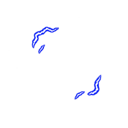 | RR_GateActivation_01 | Animation frame | Activation phase 1 of 6: small arcs gather at opposing edges. | Part of the one-off burst at the moment the ramp reaches full. It plays once and stops; it is not saved, so reloading mid-cycle does not replay it. | animation frame, drawn in sequence by code | 256 x 256 | one frame | RR_GateActivation_01.png |
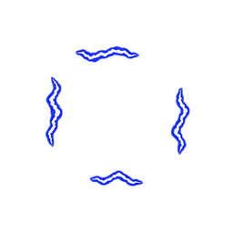 | RR_GateActivation_02 | Animation frame | Activation phase 2 of 6: four edges gather stronger filaments. | Part of the one-off burst at the moment the ramp reaches full. It plays once and stops; it is not saved, so reloading mid-cycle does not replay it. | animation frame, drawn in sequence by code | 256 x 256 | one frame | RR_GateActivation_02.png |
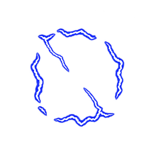 | RR_GateActivation_03 | Animation frame | Activation phase 3 of 6: peak snap with two thin inward branches, keeping the center transparent. | Part of the one-off burst at the moment the ramp reaches full. It plays once and stops; it is not saved, so reloading mid-cycle does not replay it. | animation frame, drawn in sequence by code | 256 x 256 | one frame | RR_GateActivation_03.png |
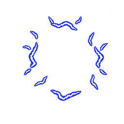 | RR_GateActivation_04 | Animation frame | Activation phase 4 of 6: scattered residual edge arcs after the peak. | Part of the one-off burst at the moment the ramp reaches full. It plays once and stops; it is not saved, so reloading mid-cycle does not replay it. | animation frame, drawn in sequence by code | 256 x 256 | one frame | RR_GateActivation_04.png |
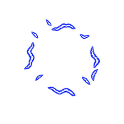 | RR_GateActivation_05 | Animation frame | Activation phase 5 of 6: remaining edge arcs diminish. | Part of the one-off burst at the moment the ramp reaches full. It plays once and stops; it is not saved, so reloading mid-cycle does not replay it. | animation frame, drawn in sequence by code | 256 x 256 | one frame | RR_GateActivation_05.png |
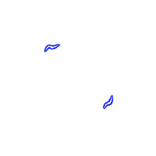 | RR_GateActivation_06 | Animation frame | Activation phase 6 of 6: two small residual sparks. Stop drawing after this frame. | Part of the one-off burst at the moment the ramp reaches full. It plays once and stops; it is not saved, so reloading mid-cycle does not replay it. | animation frame, drawn in sequence by code | 256 x 256 | one frame | RR_GateActivation_06.png |
| — | RR_GateCalibrate | Sound cue | A short, dry mechanical detent and relay click, subdued enough to repeat at each quarter of a charge cycle. | A beat at each of the three interior quarters of the way up. Deliberately not the fourth — that tick is where the ramp completes, and activation owns it. | RR_GateCalibrate | 0.6 s, 48 kHz mono | — | RR_GateCalibrate.wav |
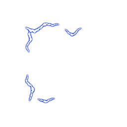 | RR_GateCharge_01 | Animation frame | Charge phase 1 of 8: sparse blue-white edge filaments, leaving the aperture clear. Shared across all gate footprints. | Drawn over the gate's frame while a connection is coming up, one frame every six ticks. You see it from designating the ramp until it reaches full. | animation frame, drawn in sequence by code | 256 x 256 | one frame | RR_GateCharge_01.png |
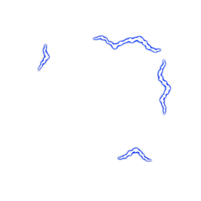 | RR_GateCharge_02 | Animation frame | Charge phase 2 of 8: discontinuous filaments flicker around the same clear aperture. | Drawn over the gate's frame while a connection is coming up, one frame every six ticks. You see it from designating the ramp until it reaches full. | animation frame, drawn in sequence by code | 256 x 256 | one frame | RR_GateCharge_02.png |
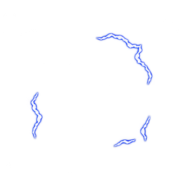 | RR_GateCharge_03 | Animation frame | Charge phase 3 of 8: blue-edged white filaments with fixed cell registration. | Drawn over the gate's frame while a connection is coming up, one frame every six ticks. You see it from designating the ramp until it reaches full. | animation frame, drawn in sequence by code | 256 x 256 | one frame | RR_GateCharge_03.png |
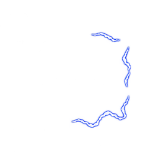 | RR_GateCharge_04 | Animation frame | Charge phase 4 of 8: edge energy flicker with no solid portal surface. | Drawn over the gate's frame while a connection is coming up, one frame every six ticks. You see it from designating the ramp until it reaches full. | animation frame, drawn in sequence by code | 256 x 256 | one frame | RR_GateCharge_04.png |
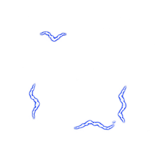 | RR_GateCharge_05 | Animation frame | Charge phase 5 of 8: sparse edge arcs continue the repeating cycle. | Drawn over the gate's frame while a connection is coming up, one frame every six ticks. You see it from designating the ramp until it reaches full. | animation frame, drawn in sequence by code | 256 x 256 | one frame | RR_GateCharge_05.png |
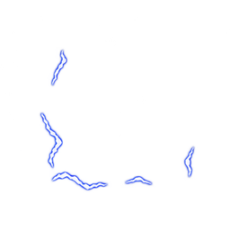 | RR_GateCharge_06 | Animation frame | Charge phase 6 of 8: short blue-white arcs shift around the aperture. | Drawn over the gate's frame while a connection is coming up, one frame every six ticks. You see it from designating the ramp until it reaches full. | animation frame, drawn in sequence by code | 256 x 256 | one frame | RR_GateCharge_06.png |
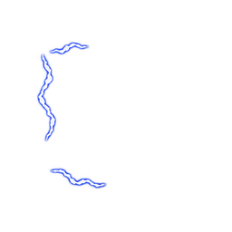 | RR_GateCharge_07 | Animation frame | Charge phase 7 of 8: edge filaments retain the same registration and scale. | Drawn over the gate's frame while a connection is coming up, one frame every six ticks. You see it from designating the ramp until it reaches full. | animation frame, drawn in sequence by code | 256 x 256 | one frame | RR_GateCharge_07.png |
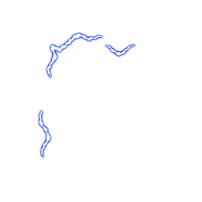 | RR_GateCharge_08 | Animation frame | Charge phase 8 of 8: the final flicker phase before returning to phase 1. | Drawn over the gate's frame while a connection is coming up, one frame every six ticks. You see it from designating the ramp until it reaches full. | animation frame, drawn in sequence by code | 256 x 256 | one frame | RR_GateCharge_08.png |
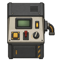 | RR_GateConsole | Building | The company's own control console: a slab panel with a green readout, labelled switches and a cable loop. Three facings. | Build under Misc, needs Microelectronics basics. A working communications console that can also be bound to a gate as its control station — the first of up to four stations, so an operator can stand up to eat the moment another sits down. An ordinary comms console works too. Remember step 8: the console has to be set to gate control on the console itself. | company gate console | 128 x 128 | east, north, south | RR_GateConsole.png |
| — | RR_GateEmergency | Sound cue | An uneven failing motor with separated mechanical impacts, distinct from the current warning cue. | Plays when the gate itself has gone wrong — a fault or a forced return. Distinct from the ordinary warning on purpose: a window running short is the gate working correctly. | RR_GateEmergency | 2.0 s, 48 kHz mono | — | RR_GateEmergency.wav |
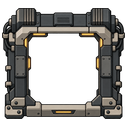 | RR_GateFrame_1x1 | Gate frame | A hollow machine frame for a single-cell gate: braced corners, cable runs and amber indicator strips. The centre is transparent so the door, its leaves and anyone standing in it stay visible. | Appears by itself on a designated single-cell door — a door or autodoor. It is cosmetic: the door keeps its own leaves, opening animation and access rules, and the transparent centre keeps pawns visible. Hide it with Show company gate frames in the settings. | cosmetic frame on designated native doors | 128 x 128 | east, north, south | RR_GateFrame_1x1_south.png |
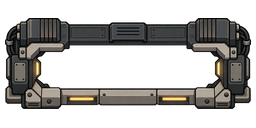 | RR_GateFrame_1x2 | Gate frame | The same frame built for a two-cell opening, taller than it is wide when the run faces east. | Appears on a designated two-cell gate, which Core gives you through an ornate door. Same cosmetic rules as the 1x1. | cosmetic frame on designated native doors | 128 x 256 / 256 x 128 | east, north, south | RR_GateFrame_1x2_south.png |
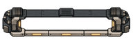 | RR_GateFrame_1x3 | Gate frame | A long three-cell frame. The run reads as one assembled structure rather than three clamps in a row. | Appears on a designated three-cell gate — a wide door from another mod, or three ordinary doors bound into one run. Three cells is the width that passes anything. | cosmetic frame on designated native doors | 128 x 384 / 384 x 128 | east, north, south | RR_GateFrame_1x3_south.png |
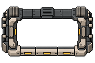 | RR_GateFrame_2x3 | Gate frame | The widest supported frame, for a bound two-by-three run. Heavier bracing than the narrow ones, because it is holding more open. | Appears on the widest supported gate, a bound two-by-three run. A wider gate draws more power while open and takes longer to bring up, so the footprint is a real choice. | cosmetic frame on designated native doors | 256 x 384 / 384 x 256 | east, north, south | RR_GateFrame_2x3_south.png |
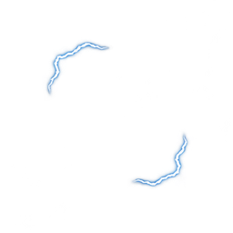 | RR_GateOpen_01 | Animation frame | Live phase 1 of 8: steady edge filaments around an open aperture, quieter than the charge cycle. Loops while a connection is open. | Loops over the frame for as long as the connection stands, one frame every ten ticks — slower than the charge cycle, so an open gate looks settled rather than straining. | animation frame, drawn in sequence by code | 256 x 256 | one frame | RR_GateOpen_01.png |
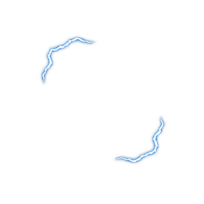 | RR_GateOpen_02 | Animation frame | Live phase 2 of 8: steady edge filaments around an open aperture, quieter than the charge cycle. Loops while a connection is open. | Loops over the frame for as long as the connection stands, one frame every ten ticks — slower than the charge cycle, so an open gate looks settled rather than straining. | animation frame, drawn in sequence by code | 256 x 256 | one frame | RR_GateOpen_02.png |
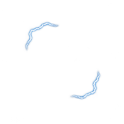 | RR_GateOpen_03 | Animation frame | Live phase 3 of 8: steady edge filaments around an open aperture, quieter than the charge cycle. Loops while a connection is open. | Loops over the frame for as long as the connection stands, one frame every ten ticks — slower than the charge cycle, so an open gate looks settled rather than straining. | animation frame, drawn in sequence by code | 256 x 256 | one frame | RR_GateOpen_03.png |
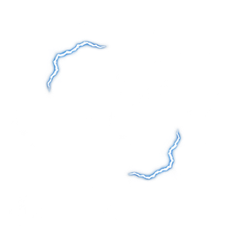 | RR_GateOpen_04 | Animation frame | Live phase 4 of 8: steady edge filaments around an open aperture, quieter than the charge cycle. Loops while a connection is open. | Loops over the frame for as long as the connection stands, one frame every ten ticks — slower than the charge cycle, so an open gate looks settled rather than straining. | animation frame, drawn in sequence by code | 256 x 256 | one frame | RR_GateOpen_04.png |
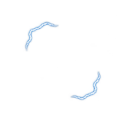 | RR_GateOpen_05 | Animation frame | Live phase 5 of 8: steady edge filaments around an open aperture, quieter than the charge cycle. Loops while a connection is open. | Loops over the frame for as long as the connection stands, one frame every ten ticks — slower than the charge cycle, so an open gate looks settled rather than straining. | animation frame, drawn in sequence by code | 256 x 256 | one frame | RR_GateOpen_05.png |
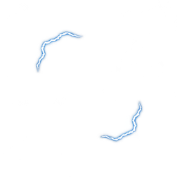 | RR_GateOpen_06 | Animation frame | Live phase 6 of 8: steady edge filaments around an open aperture, quieter than the charge cycle. Loops while a connection is open. | Loops over the frame for as long as the connection stands, one frame every ten ticks — slower than the charge cycle, so an open gate looks settled rather than straining. | animation frame, drawn in sequence by code | 256 x 256 | one frame | RR_GateOpen_06.png |
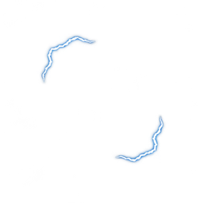 | RR_GateOpen_07 | Animation frame | Live phase 7 of 8: steady edge filaments around an open aperture, quieter than the charge cycle. Loops while a connection is open. | Loops over the frame for as long as the connection stands, one frame every ten ticks — slower than the charge cycle, so an open gate looks settled rather than straining. | animation frame, drawn in sequence by code | 256 x 256 | one frame | RR_GateOpen_07.png |
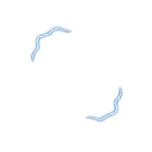 | RR_GateOpen_08 | Animation frame | Live phase 8 of 8: steady edge filaments around an open aperture, quieter than the charge cycle. Loops while a connection is open. | Loops over the frame for as long as the connection stands, one frame every ten ticks — slower than the charge cycle, so an open gate looks settled rather than straining. | animation frame, drawn in sequence by code | 256 x 256 | one frame | RR_GateOpen_08.png |
| — | RR_GateOpenLoop | Sound cue | A quieter four-second repeating motor presence for an open gate. | The quieter presence while a connection is open. Same self-terminating loop as the spin hum: a destroyed gate goes quiet on its own. | RR_GateOpenLoop | 4.0 s, 48 kHz mono | — | RR_GateOpenLoop.wav |
| — | RR_GatePowerRise | Sound cue | The gate pulling on its reserve. Low and rising. | Plays when an opening starts and the gate pulls on its reserve, including on a recovery opening. | RR_GatePowerRise | 2.0 s, 48 kHz mono | — | RR_GatePowerRise.wav |
| — | RR_GateRampDown | Sound cue | A descending rev settles into a final latch and silence, giving normal closure a resolved ending. | Plays when a connection closes normally, and when a ramp is stopped on purpose. It resolves into a latch, which is the contrast that says this was a safe outcome. | RR_GateRampDown | 2.5 s, 48 kHz mono | — | RR_GateRampDown.wav |
| — | RR_GateRampUp | Sound cue | An industrial motor rev climbs and holds its upper speed. The ending stays unresolved; a brief anti-click fade trims the edge. | Plays when a ramp starts, after the message and the record. It ends unresolved on purpose: that is what tells you the gate is becoming dangerous rather than becoming safe. | RR_GateRampUp | 2.5 s, 48 kHz mono | — | RR_GateRampUp.wav |
| — | RR_GateSpinLoop | Sound cue | A repeating low motor hum and periodic pulse for charge-up. Three-second periodic mono loop. | Hums under the whole ramp and stops when the ramp does. Reconciled every tick rather than started and stopped by event, so it cannot be left playing — and it restarts by itself after a reload mid-ramp. | RR_GateSpinLoop | 3.0 s, 48 kHz mono | — | RR_GateSpinLoop.wav |
| — | RR_GateWarning | Sound cue | Something is wrong at a gate, or something has come through it. The mod's most-used cue, so it is short and unmistakable. | The mod's most-used cue, which is why it is short. The ten, five and two-minute window warnings, a standing recall, and something coming through a gate. | RR_GateWarning | 1.1 s, 48 kHz mono | — | RR_GateWarning.wav |
| — | RR_JournalFiled | Sound cue | Paper friction followed by an archive latch. | Plays when a filled journal reaches the records archive and custody is established. That is the step the light on an accepted job is waiting for. | RR_JournalFiled | 0.7 s, 48 kHz mono | — | RR_JournalFiled.wav |
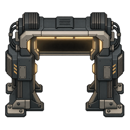 | RR_MachineGate | Interface icon | The arch that gives the Set Gate button its picture. Drawn face on, which is right for an interface icon and wrong for the floor, so it is never placed in the world. | Never placed in the world. It is the picture on the Set Gate button you click on a door to designate it, drawn face on, which is right for an icon and wrong for the floor. | button icon; no longer a buildable | 256 x 256 | one frame | RR_MachineGate.png |
| — | RR_MarkerSet | Sound cue | A small switch click with a brief indicator tick. | Plays when a survey tag is given a meaning, which is the moment the tag starts being worth anything to you. | RR_MarkerSet | 0.4 s, 48 kHz mono | — | RR_MarkerSet.wav |
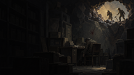 | RR_Menu_BreachedVault | Menu background | Two figures at a torn opening high in a wall of collapsed shelving, lit from behind. A way out found in a storeroom that has already failed. | Shown behind the main menu, in turn with the other eleven. Turn the slideshow off, or set reduced motion to hold one still image, in the mod's settings. | main menu slideshow | 1672 x 941 | — | — |
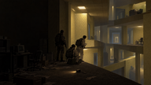 | RR_Menu_CorridorEncounter | Menu background | A crew crouched in a lit corridor junction over a casualty, equipment down, one standing watch. Patterned wallpaper and strip lighting. | Shown behind the main menu, in turn with the other eleven. Turn the slideshow off, or set reduced motion to hold one still image, in the mod's settings. | main menu slideshow | 1672 x 941 | — | — |
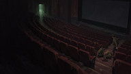 | RR_Menu_EmptyCinema | Menu background | Rows of empty red seats in a dark auditorium, one figure slumped at the end of a row and another approaching along the aisle. | Shown behind the main menu, in turn with the other eleven. Turn the slideshow off, or set reduced motion to hold one still image, in the mod's settings. | main menu slideshow | 1672 x 941 | — | — |
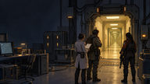 | RR_Menu_FacilityThreshold_v2 | Menu background | The company side of a gate: instrument racks, a researcher and two armed crew watching a yellow corridor open beyond a machine threshold. | Shown behind the main menu, in turn with the other eleven. Turn the slideshow off, or set reduced motion to hold one still image, in the mod's settings. | main menu slideshow | 1672 x 941 | — | RR_Menu_FacilityThreshold_v2.png |
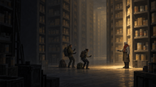 | RR_Menu_FamiliarStranger | Menu background | Three figures with torches in a vast warehouse of identical stacked crates, a fourth standing apart in the light, unmoving. | Shown behind the main menu, in turn with the other eleven. Turn the slideshow off, or set reduced motion to hold one still image, in the mod's settings. | main menu slideshow | 1672 x 941 | — | — |
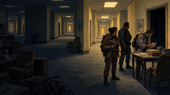 | RR_Menu_FieldSurvey_v2 | Menu background | A survey team reading at a table in a furnished corridor, lamps on, plants and framed pictures. Ordinary and wrong at once. | Shown behind the main menu, in turn with the other eleven. Turn the slideshow off, or set reduced motion to hold one still image, in the mod's settings. | main menu slideshow | 1672 x 941 | — | RR_Menu_FieldSurvey_v2.png |
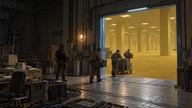 | RR_Menu_IndustrialGateLogistics | Menu background | A loading floor with crates on a pallet truck, crew moving them through a wide lit opening into yellow space. | Shown behind the main menu, in turn with the other eleven. Turn the slideshow off, or set reduced motion to hold one still image, in the mod's settings. | main menu slideshow | 1672 x 941 | — | — |
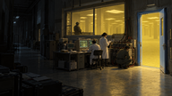 | RR_Menu_LaboratoryOperations | Menu background | A lab seen from the dark side of its window: researchers at consoles inside, an open door spilling yellow light. | Shown behind the main menu, in turn with the other eleven. Turn the slideshow off, or set reduced motion to hold one still image, in the mod's settings. | main menu slideshow | 1672 x 940 | — | — |
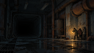 | RR_Menu_LightsOut | Menu background | A flooded industrial corridor with failed lighting. A huddle of figures at the right edge is the only thing moving. | Shown behind the main menu, in turn with the other eleven. Turn the slideshow off, or set reduced motion to hold one still image, in the mod's settings. | main menu slideshow | 1672 x 941 | — | — |
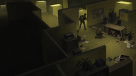 | RR_Menu_PanicJunction | Menu background | An overhead view of a yellow cubicle maze, furniture overturned, papers and blood on the carpet, one figure running. | Shown behind the main menu, in turn with the other eleven. Turn the slideshow off, or set reduced motion to hold one still image, in the mod's settings. | main menu slideshow | 1672 x 941 | — | — |
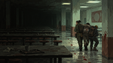 | RR_Menu_RedTrail | Menu background | A wet canteen of long tables, a crew carrying somebody out, a hand print and a trail on the wall behind them. | Shown behind the main menu, in turn with the other eleven. Turn the slideshow off, or set reduced motion to hold one still image, in the mod's settings. | main menu slideshow | 1672 x 941 | — | — |
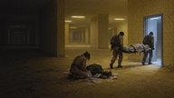 | RR_Menu_SilentRecovery | Menu background | A recovery at a lit threshold: one crew member kneeling over a body on the floor, two more carrying a stretcher out through the door. | Shown behind the main menu, in turn with the other eleven. Turn the slideshow off, or set reduced motion to hold one still image, in the mod's settings. | main menu slideshow | 1672 x 941 | — | — |
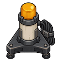 | RR_ReturnBeacon | Building | An amber lamp on a weighted tripod with a coiled lead. A marker, not a lamp for lighting a room. | Build under Furniture, needs Electricity. A small amber lamp for marking a spot rather than lighting a room — a landmark at a threshold or a junction you want to find again. | site marker beacon | 128 x 128 | east, north, south | RR_ReturnBeacon.png |
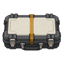 | RR_SealedEvidenceCase | Item | A latched transit case with a banded lid and sprung catches. Built to hold findings and nothing else. | Build under Furniture. Storage that accepts recordings and journals and nothing else, so what is inside it is always what it says it is — a shelf will take whatever a hauler decides belongs there. Carryable through a gate. | sealed evidence case | 128 x 128 | east, north, south | RR_SealedEvidenceCase.png |
| — | RR_SectionAssembled | Sound cue | Two fastening strikes followed by a heavier securing latch. | Plays as each of the gate's four assembly sections completes, and again when the assembly finishes — so four people working four benches each get the confirmation. | RR_SectionAssembled | 0.8 s, 48 kHz mono | — | RR_SectionAssembled.wav |
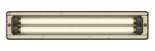 | RR_SiteFluorescent | Building | A long institutional strip fitting, seen from above. Flat enough that its east facing is the same drawing turned ninety degrees. | Build under Furniture, needs Electricity. Throws a wide flat pool rather than a bright circle, so a corridor reads as lit instead of as three pools of light. The same fitting, already installed, is what lights every coordinate beyond a gate: one strip in each bay of a hall and one every seventh cell down a corridor, running off the place itself rather than your generator. | liminal fluorescent fixture | 128 x 384 / 384 x 128 | east, north, south | RR_SiteFluorescent.png |
| — | RR_SpatialTell | Sound cue | The space itself behaving incorrectly. Deliberately unlike every other cue in the package, because it is the only one that is not a machine or a person. | Plays when the space itself behaves incorrectly. Deliberately unlike every other cue, because it is the only one that is not a machine or a person. | RR_SpatialTell | 1.4 s, 48 kHz mono | — | RR_SpatialTell.wav |
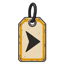 | RR_SurveyTag | Item | A numbered company tag on a ring, with a printed arrow and a small lamp behind the card. | Build under Misc. Set it down and give it a meaning; the colour is the meaning. Read the same way as a glow pod, with the one difference that matters underground: a glow pod is alive and dies on its own schedule, and a tag does not. | survey tag | 128 x 128 | east, north, south | RR_SurveyTag.png |
| RR_UtilityGenerator | Building | A compact wood-fired set with an exhaust stack and a side hopper of split logs. The hopper is why it burns wood rather than chemfuel. | Build under Power, needs Electricity. Wood-fired, 1400W against a standard set's 1000 for the same footprint — and it eats and breaks for it. A branch running one is usually a branch that could not reach a grid. | company utility generator | 256 x 256 | east, north, south | RR_UtilityGenerator.png |
Where a master is a dash
Every drawing of a game object is cut from a larger master kept outside the package, and so is every cue; that master's filename is in the last column.
10 of the 69 entries have no separate master, and every one of them is a menu background. There is nothing to cut: a background ships at the size it was drawn.